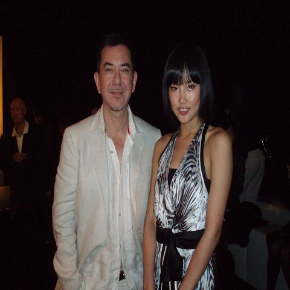
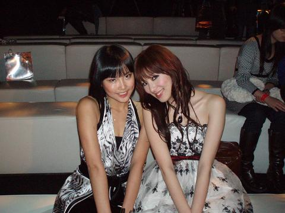
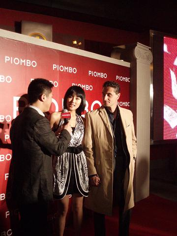

PIOMBO无论是从外观,色彩,质地和细节等各方面,休闲的或者是商务的,男士们穿起来都会很有风度...非常吸引女孩子...每时每刻都散发着浪漫的气息!
见了自己的偶像:黄秋生大哥和我,真的很友风度哦,当晚他身着PIOMBO,看起来非常有魅力...
当天我穿的是我的最爱品牌之一GUESS,这条是GUESS今年最新款,我非常喜欢.怎么样?和黄秋生站一起还挺搭的吧,哈哈.

我和美丽的77,那天的77特别漂亮...

来自意大利领事管的一位风度先生,真不好意思,我实在记不住他的又长又饶舌的意大利名字...他也是一身的PIOMBO,果然很有风度吧..
